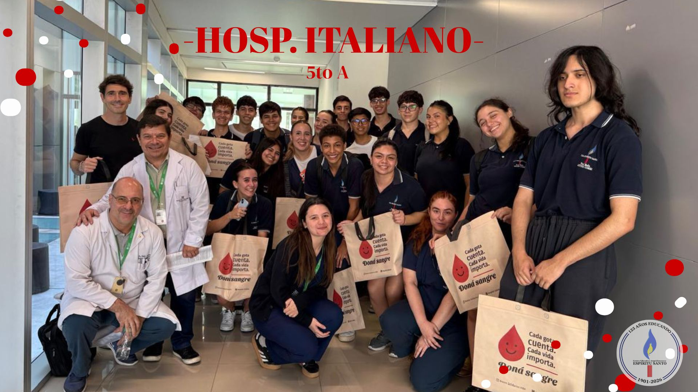
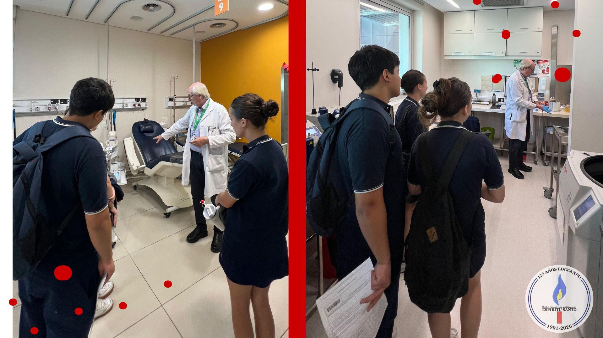

Visita a Hospital Italiano
Por:Agustina Villareal y Mauricio Criollo

Participaron los alumnos de 5°A.
El dia 31 de marzo los alumnos de 5to A y parte del equipo docente se dirigeron a el Hospital Italiano para ser parte de una visita guiada llevada a cabo por distintos profesionales del equipo de salud del edificio. La visita comenzó a las 12 de la tarde y finalizó aproximadamente a las 2 de la tarde.
Durante esta se dividió al grupo en 3 para que se fuera realizando el recorrido de distintas zonas del hospital en simultáneo. Cada grupo estaba acompañado por un docente y dirigido por un profesional, que dirigía a su grupo dentro de cada área dentro del proceso de donación de sangre. Allí se explicó las condiciones que una persona debe tener para poder ser donante y todos los procesos que son llevados a cabo para la registración, conservación y uso de la sangre y los distintos componentes de la misma.

Leer otras notas
Misa por la educación
Acto de conmemoración del Día Nacional de la Memoria por la Verdad y la Justicia - 24 de Marzo
Publicidad